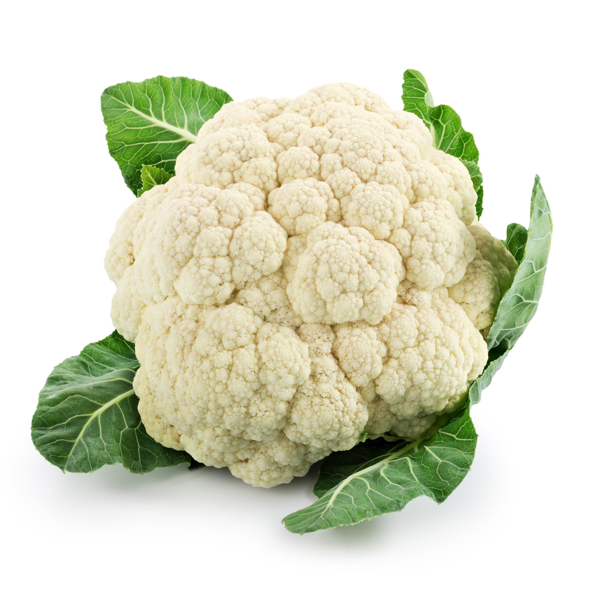

JESTES KALAFIOREM
 kalafior jest spoko
pasuje do wielu dan fajnie sie go je i wyglada jak male drzewo albinos
minus jest taki ze jest raczej dodatkiem bo nie ma intensywnego smaku
fajnie, zebys troche bardziej wychodzil do innych
i zaznaczal swoje zdanie i to kim jestes
nie musisz miec 100 ziomkow ale z 3 by sie nadalo